Chapter 01
Logic and Computability
Quantum computing proposes a new model of computation. When the idea of computation was being developed, it was necessary to define it purely as a sequence of logical operations. As computation is done by a physical device, this process has to be physical. Since quantum mechanics describes all physical processes, computation becomes quantum mechanical. How, then, does this differ from our usual notion of computing devices? To understand this, this chapter builds the necessary ideas leading up to a quantum model of computation.
We first define what computation is and describe the various models of computation and their limits. We then introduce reversible computation, which paves the way for quantum computation.
Can mathematical reasoning be given foundations whose reliability can itself be established?
The notion of computability finds its origin in establishing the reliability of mathematical reasoning. The purpose of mathematics is to provide objective grounds for establishing truth through the following scheme: choose your domain and fix your axioms and rules of inference. Now, everything related to the domain must be settled by starting with the axioms and following the rules.
For example, fix your domain to be the set of integers. Your axioms are all the axioms about integers (known as Peano's axioms of arithmetic). Let's make the statement, "The sum of two even integers is even." Starting with \(2a\) and \(2b\), the axioms allow us to write \(2a + 2b = 2(a + b)\), which shows that the sum is even. So, we are able to settle this question. Can we settle all statements that one can frame about integers?
In this chapter · 4 sections · 11 topics
1.1
Formal Reasoning and Decision Problems
Why begin a course on computation with mathematical proofs? They give us a concrete example of a task whose steps can be made explicit. We use this example to ask what it means for a procedure to check, search, or decide.
1.1.1 Axioms, inference rules, and proofs§
A proof starts from accepted assumptions and reaches a conclusion through allowed steps. The starting assumptions are called axioms. The allowed steps are specified by rules of inference. For example, if we know \(P\) and know that \(P\) implies \(Q\), we may conclude \(Q\).
In the even-integer example from the introduction, each step used a definition or an arithmetic rule. If we record these justifications explicitly, another person can check the argument without having to discover it again.
Now suppose the statements and rules are written precisely enough for each step to be checked by following fixed instructions. A machine could then check a supplied proof. This is the connection we need: reasoning can be represented as a finite sequence of operations.
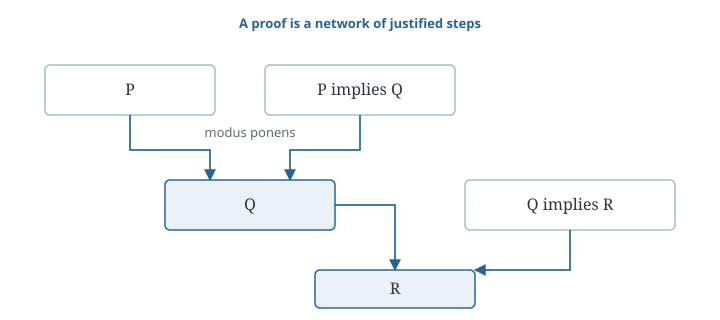
1.1.2 Hilbert’s program and consistency§
Writing rules explicitly lets us check whether an argument follows them. But are the rules themselves reliable? Could they allow us to prove both a statement and its opposite? A system that never does this is called consistent.
Hilbert wanted to put mathematics on a secure foundation. First, its assumptions and proof rules would be made explicit. Then one would show that those rules could never produce a contradiction.
He hoped to give this justification using reasoning about finite objects and concrete operations on them. These were called finitary methods. Even when a mathematical statement concerns infinitely many numbers, its written proof is finite. So, proofs and the rules for constructing them could themselves be studied.
This was a question about the reliability of mathematical reasoning. A related question concerns its automation: once the rules are explicit, can a procedure always determine whether a statement has a proof? To see the difficulty, we must distinguish checking a proof from searching for one.
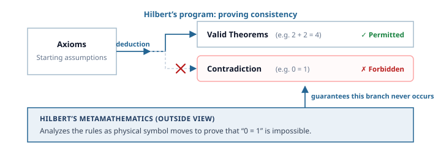
1.1.3 Proof checking, proof search, and decision§
Suppose we are given a proposed proof. We can check its steps and accept or reject that particular argument. Rejection does not show that the conclusion has no proof; a different argument might work.
What if no proof is supplied? Suppose proofs use a fixed, finite collection of symbols. We can list candidate strings in order of length and check each one. Most will not be proofs. But every finite proof eventually appears, so this search finds a proof whenever one exists.
What happens if there is no proof? The search keeps trying longer candidates. It never reaches a last candidate that certifies failure.
A decision procedure must do more. For every statement we give it, it must finish with a correct answer: “a proof exists” or “no proof exists.” Our search method does not meet that requirement.
Could another method succeed? Failure of one search strategy does not show that every possible strategy fails. To investigate that question, we need to specify what counts as a mechanical procedure. This leads us to models of computation.
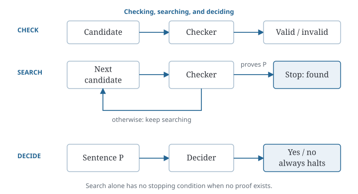
1.2
Models of Computation
We now make “mechanical procedure” precise. We first examine an algorithm, describe its steps as transitions between configurations, and then introduce a model that can express general computations.
1.2.1 Algorithms and termination§
Let us first consider a procedure whose steps we can examine directly. We want the greatest common divisor of two positive integers: the largest positive integer that divides both without remainder.
Euclid’s algorithm repeatedly divides and keeps the remainder. For \(48\) and \(18\), we obtain
\[48=2\cdot18+12,\qquad18=1\cdot12+6,\qquad12=2\cdot6+0.\]
The pairs change as follows:
\[(48,18)\longrightarrow(18,12)\longrightarrow(12,6)\longrightarrow(6,0).\]
At a step with pair \((a,b)\), suppose \(b\) is positive. Divide \(a\) by \(b\). Write the result as \(a=qb+r\), where \(q\) is the quotient and \(r\) is the remainder. The remainder satisfies \(0\le r\lt b\).
Replace \((a,b)\) by \((b,r)\) and repeat. When the second entry becomes zero, return the first. In our example, we reach \((6,0)\), so the answer is six.
Why does this give the correct answer? Suppose a number divides both \(a\) and \(b\). It must also divide \(a-qb\), which is the remainder \(r\). So, every common divisor of \(a\) and \(b\) is a common divisor of \(b\) and \(r\).
The reverse also holds. A number dividing both \(b\) and \(r\) divides \(qb+r=a\). Thus the old pair and the new pair have exactly the same common divisors. In particular, their greatest common divisor is unchanged. A property that remains unchanged at every step is called an invariant.
Why does the procedure finish? Each new second entry is smaller than the previous one, and it is never negative. A sequence of nonnegative integers cannot keep decreasing forever. Eventually the second entry is zero.
At that point the pair is \((g,0)\). Its greatest common divisor is \(g\): every divisor of \(g\) also divides zero. Since the greatest common divisor has stayed unchanged, \(g\) is the answer for the original pair.
We have established two things: the steps preserve the answer, and the process reaches its stopping condition. These require separate arguments. A procedure that repeats the same pair forever preserves the greatest common divisor but never returns it. So, preserving the answer alone is not enough.
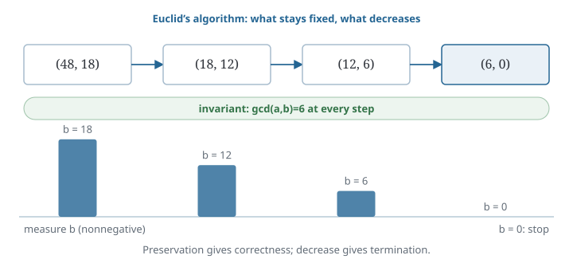
1.2.2 Configurations and transitions§
Suppose we pause Euclid’s algorithm at the pair \((18,12)\), just before the next division. What must we record in order to continue? We need the pair and the instruction that comes next. We do not need the earlier pairs.
The information needed to resume a computation is called its configuration. What must we include? That depends on where we allow the computation to pause.
At the start of Euclid’s repeated step, we need only the pair: the next instruction is already fixed. Halfway through a division, the pair alone would not be enough. We would also need the temporary values and a record of how far the division had progressed.
A transition is one step from a configuration to the next. Starting with a particular input, we obtain a sequence of configurations. This sequence is called a run. The algorithm supplies the transition rules and tells us when to stop.
Proof search can be described in the same way. We record the candidate being checked, the line currently under examination, and any other information needed by the checker. Each operation updates this configuration.
For a deterministic procedure, the current configuration determines the next step. Does it also determine the previous step? In Euclid’s algorithm, both \((30,18)\) and \((48,18)\) lead to \((18,12)\). So, knowing how to continue does not necessarily tell us how to go backward. We will return to this distinction when we consider reversibility.
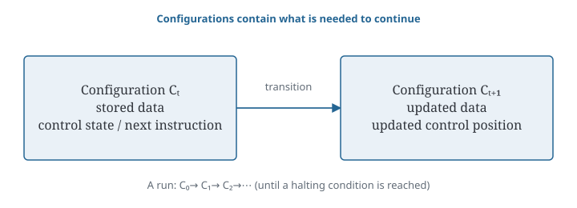
1.2.3 Turing machines and universal computation§
We have described computation as a sequence of transitions. But an instruction such as “divide” still contains many operations. To study computation in general, we need a model with explicitly specified elementary steps.
A Turing machine has a tape divided into cells. Each cell holds a symbol from a fixed, finite collection, including a blank symbol. A head reads one cell at a time.
The machine also has an internal state chosen from a finite list. The state records which stage of its instructions it is in. A rule table uses two pieces of information: the current state and the symbol under the head.
For each relevant pair, the rule tells the machine what to write, whether to move one cell left or right, and which state to enter next. If it enters the halting state, the computation stops.
For example, place a finite block of \(1\) symbols on an otherwise blank tape, with the head at the left end. Give the machine the rule to move right whenever it reads \(1\), and to halt when it reads a blank. The same finite instructions work for a block of any finite length.
To resume this machine, we need the tape contents, the head position, and the internal state. Together, these make up its configuration.
The model does not fix a maximum tape length in advance. More cells are available when needed. This does not mean that a completed calculation uses infinite memory: after finitely many steps, the head has visited only finitely many cells.
With more rules, the machine can carry out arithmetic or check proofs. Its own rule table is also a finite object, so we can encode that table as a string of symbols.
Another machine can read this description and imitate the described machine, one step at a time. A universal Turing machine can do this for any correctly encoded machine and input. Changing the description changes the computation it simulates.
Now a program can be treated as data. We can supply its description to another program, or even supply it to itself. This requires only copying a finite string. It will be useful when we ask what programs can determine about other programs.
This gives a general model of computation. We can use it to describe particular algorithms and to formulate questions about all machines in the model.
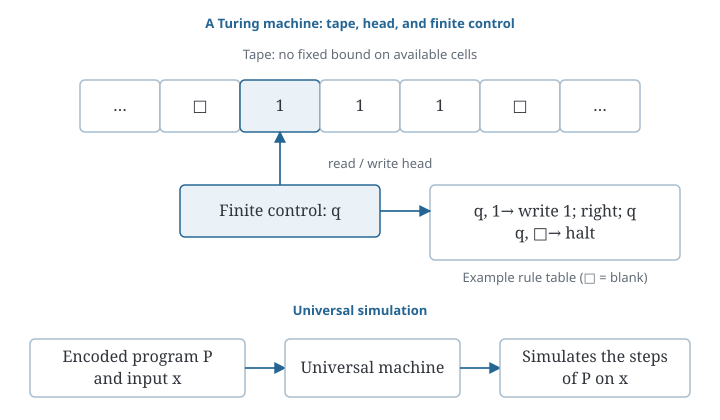
1.3
Computability and Its Limits
A model specifies which procedures we can discuss. We can now ask how it relates to effective calculation and which questions no procedure in the model can decide.
1.3.1 The Church–Turing thesis§
We have defined a model using a tape, a head, and a finite rule table. Why use this model to discuss the limits of effective calculation? Could another reasonable model compute functions that Turing machines cannot?
Other mathematical models describe computation in different ways. Lambda calculus uses rules for substituting expressions. Recursive-function models build functions from specified basic functions and construction rules.
Despite these differences, they compute the same functions as Turing machines. A function computable in one model is computable in the others. This equivalence is a mathematical result that can be proved.
The Church–Turing thesis makes a further claim: any calculation that can be carried out by an effective mechanical method can be carried out by a Turing machine.
The phrase “effective mechanical method” is an informal idea. A Turing machine is a precisely defined object. The thesis connects the two. The agreement between different formal models supports it, but does not turn it into a theorem about an already defined class of every possible mechanical method.
This distinction matters when we establish a limitation. We can prove that no Turing machine solves a specified problem. Applying that result to effective procedures in general uses the thesis.
The thesis concerns whether a function can be computed at all. It does not say how much time or memory the computation needs.
This matters for quantum computing. In the standard quantum model, the allowed operations must themselves have effective mathematical descriptions. Under this condition, quantum computers do not compute functions that are uncomputable by Turing machines. They can change the resources needed for some tasks that are already computable. We will return to this difference when studying quantum algorithms.
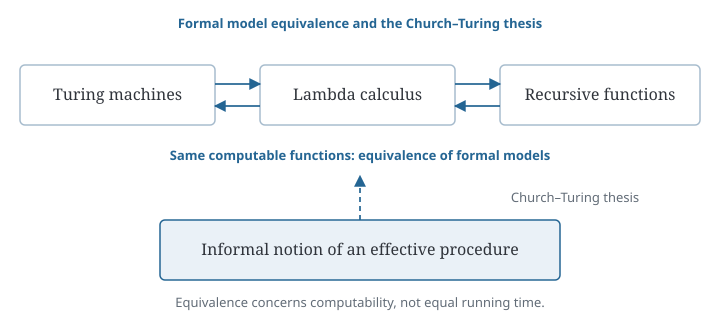
1.3.2 The halting problem§
Given a program and its input, can we always determine whether the computation will stop? We know that Euclid’s algorithm stops for its permitted inputs. We also know that a program instructed to repeat forever does not stop. Can one procedure settle this question for every program and input?
Suppose such a procedure exists. Call it \(H(P,x)\), where \(P\) is a program description and \(x\) is its input. We require \(H\) itself to finish and answer correctly on every valid pair.
Let us use \(H\) to construct another program, \(D\). Its input \(p\) is a program description. First, \(D\) calls \(H(p,p)\): it asks what happens when the program described by \(p\) receives its own description as input.
Then \(D\) takes the opposite action. If \(H\) answers “halts,” \(D\) enters an endless loop. If \(H\) answers “does not halt,” \(D\) stops. If the input is not a valid program description, we can simply let \(D\) stop.
Now let \(d\) be the description of \(D\), and give \(d\) to \(D\). What should \(H(d,d)\) answer?
If it answers “halts,” the instructions of \(D\) make this run continue forever. If it answers “does not halt,” the instructions make the run stop. In either case, the prediction is wrong.
We assumed that \(H\) was an algorithm that always finished and answered correctly. That assumption allowed us to use it as part of \(D\). But the resulting program contradicts the assumption. Therefore no such general \(H\) exists. This result is called the undecidability of the halting problem.
This does not prevent us from determining the behavior of particular programs. We already proved that Euclid’s algorithm terminates. It also permits an analyzer that sometimes answers “unknown.” What is excluded is one algorithm that always finishes with a correct definite answer for every case.
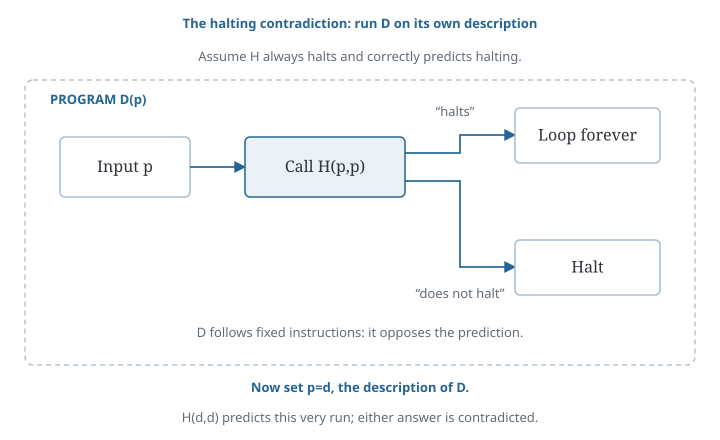
1.3.3 Undecidability and incompleteness§
We began by asking whether explicit rules could make mathematical reasoning reliable and whether a procedure could settle every question about proofs. The halting result shows how to prove a limitation on procedures. We now briefly consider the corresponding limits on what a system of axioms can prove.
A problem is undecidable if no algorithm always finishes with the correct yes-or-no answer for every input. A theory is incomplete if some sentence can neither be proved nor refuted using its axioms and rules. The first is a limitation on procedures; the second is a limitation on what follows from chosen assumptions.
To state the Gödel–Rosser incompleteness theorem, first consider a theory with three properties. It is consistent. Its axioms can be listed by an algorithm. And it contains enough arithmetic to express basic calculations with nonnegative integers.
For a concrete example of the last requirement, take Peano arithmetic. This is the usual first-order theory of nonnegative integers with addition, multiplication, and induction. The theorem applies to consistent theories that include these axioms and whose axioms can be listed algorithmically. It also applies to certain weaker arithmetic theories.
The conclusion is that some sentence \(P\) has neither a proof nor a refutation in the theory. The theory proves neither \(P\) nor \(\neg P\).
A theory whose axioms can be listed by an algorithm is called effectively axiomatized. The list may be infinite: each axiom only needs to appear after finitely many steps. A proof can include a record showing when a cited axiom appears on that list. This lets a checker verify the use of that axiom in finite time.
Can we settle an unanswered sentence by adding it as a new axiom? We can. But if the enlarged theory still meets the theorem’s conditions, some sentence will again remain unsettled. It need not be the same sentence. The result does not apply to every formal theory; the conditions matter.
Gödel’s second incompleteness theorem concerns the consistency question. A theory with enough arithmetic can write statements about its own encoded proofs. In particular, it can express the claim that none of those proofs derives a contradiction.
For theories satisfying the theorem’s arithmetic and proof-representation conditions, the result is this: if the theory is consistent, it cannot prove that standard statement of its own consistency.
So, a consistency argument whose steps can all be carried out within the same theory cannot provide this justification. A stronger theory may prove that a weaker one is consistent. But we must then examine the assumptions of the stronger theory.
So, formal reasoning has precise limitations. We can still prove particular statements and construct algorithms for particular tasks. For the tasks that admit algorithms, we can now ask how those algorithms should be implemented.
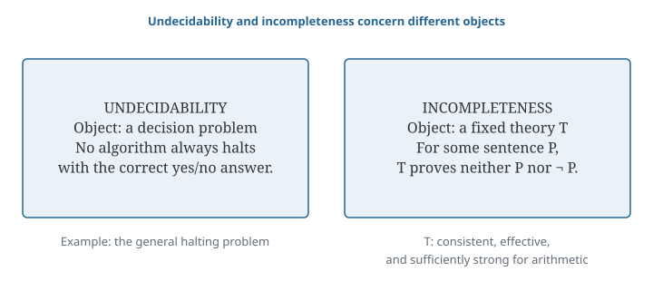
1.4
From Computability to Reversibility
For a task that admits an algorithm, we still need to choose how to implement it. We now examine whether its steps preserve enough information to be undone.
1.4.1 Deterministic and reversible transitions§
In a deterministic computation, each configuration has at most one next configuration. A halting configuration may have none. When the computation can continue, the current configuration fixes what happens next.
Does knowing the later configuration also tell us which earlier one produced it? Determinism does not require this.
For example, Euclid’s algorithm includes the transitions
\[(30,18)\longrightarrow(18,12),\qquad(48,18)\longrightarrow(18,12).\]
Knowing the pair \((18,12)\) lets us continue the calculation, but it does not identify which earlier pair occurred. Different configurations have merged into the same one.
To undo a step, we must be able to recover the earlier configuration from the full resulting configuration. This requires different inputs to have different outputs. Such a transition is called one-to-one. Logical reversibility requires this extra condition.
Suppose the transition also reaches every configuration in a fixed state space. It is then a bijection: each configuration has exactly one predecessor. We can define the reverse transformation everywhere on that space.
So, knowing what happens next does not necessarily tell us what happened before. We now ask whether useful computations can preserve enough information to be reversed.
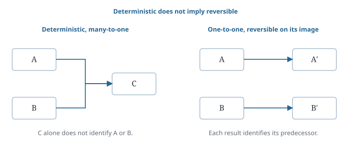
1.4.2 Information loss in computation§
Consider the Boolean AND operation. Its output is one only when both input bits are one. The inputs \(00\), \(01\), and \(10\) all produce zero. If we retain only this output, we cannot recover the input pair.
Must we discard the input to obtain the answer? Suppose we want to calculate \(f(x)\). If we replace \(x\) by its answer, two different inputs may become indistinguishable. If we keep both the input and the answer as \((x,f(x))\), the input remains available. This suggests using extra storage while carrying out the calculation.
Keeping the input is only a starting idea. We must choose elementary steps that can be undone. We must say what values the extra storage holds at the start. We must also decide what to do with temporary results. The next chapter develops these constructions using Boolean functions and circuits.
Why does this matter for quantum computing? When a quantum system evolves without interacting with anything outside it, its evolution is described by a unitary transformation. Such a transformation has an inverse: mathematically, it can be undone.
This is why reversible operations are important in quantum circuits. We need to learn how to obtain an answer through steps that preserve this possibility of reversal. Measurement and discarding part of a system are different kinds of operations, which we will treat separately.
We have moved from asking whether a task admits an algorithm to asking how the algorithm transforms information. The limits of computability do not settle this implementation question. We now need to examine the operations used in the computation itself.
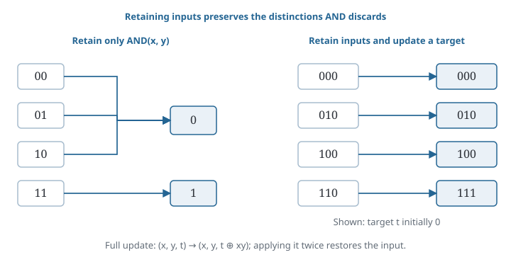
Related appendix: Automata and memory. Additional formal models are discussed in Grammars and lambda calculus.
Further reading: Turing’s On Computable Numbers, with an Application to the Entscheidungsproblem introduces the machine model and proves that the logical decision problem cannot be solved by a general procedure. Rosser’s Extensions of Some Theorems of Gödel and Church shows that consistency suffices for the first incompleteness result, replacing a stronger assumption in Gödel’s original proof. Bennett’s Logical Reversibility of Computation shows how computations can be simulated using reversible steps.